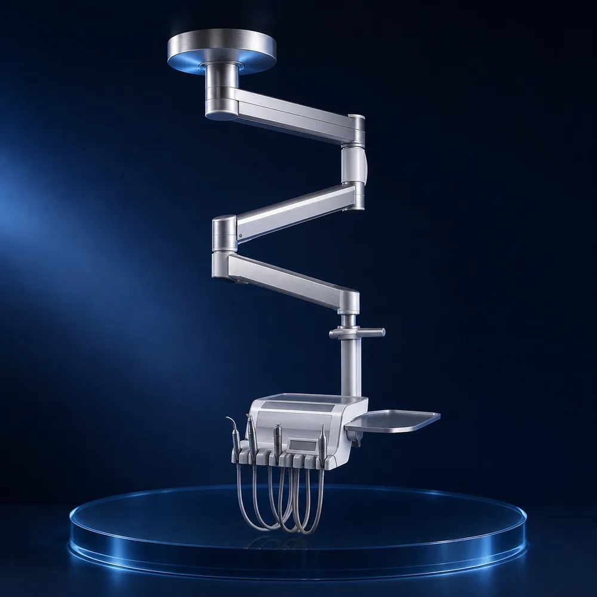
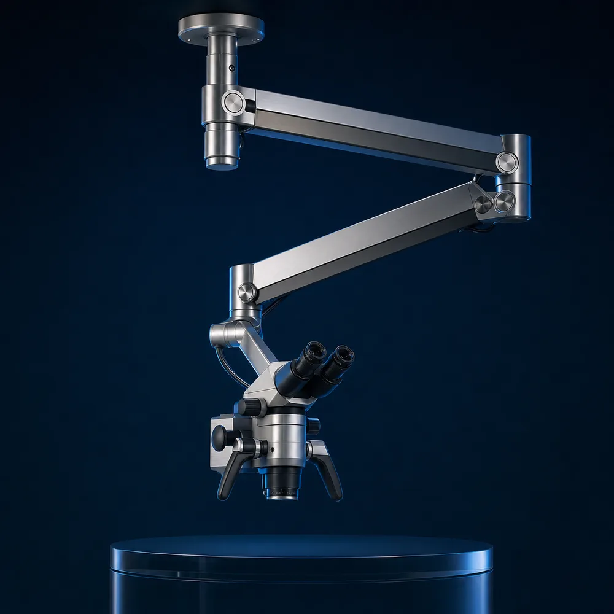

01Серийное решениеКрепление стоматологической установки
Освобождает рабочую зону и дает врачу плавный доступ к инструментам с любой стороны кресла.
Нагрузка до 85 кгРадиус до 2100 ммПоворот 360°
Получить спецификацию ↗
Подвесные крепления для стоматологических установок и микроскопов — спроектированы под вашу клинику, оборудование и стиль работы.
Каждая система создается вокруг реального рабочего процесса — без универсальных компромиссов.

01Серийное решениеОсвобождает рабочую зону и дает врачу плавный доступ к инструментам с любой стороны кресла.

02Серийное решениеТочная балансировка оптики, мягкая фиксация в любой точке и скрытая прокладка коммуникаций.
Внутренняя архитектура рычагов распределяет нагрузку по всей кинематической цепи. Оборудование движется легко и останавливается точно там, где нужно врачу.
Берем на себя техническую ответственность на каждом этапе.
Инженер оценивает перекрытие, высоту потолка и рабочие сценарии врача.
Готовим схему монтажа, расчет нагрузок и конфигурацию под ваше оборудование.
Изготавливаем систему и проверяем каждый узел под рабочей нагрузкой.
Устанавливаем, балансируем и передаем комплект исполнительной документации.
Оставьте контакты — инженер свяжется с вами, уточнит оборудование и подготовит предварительную конфигурацию.
Телефон+7 (495) 120-44-85Почтаproject@castorsteel.ru